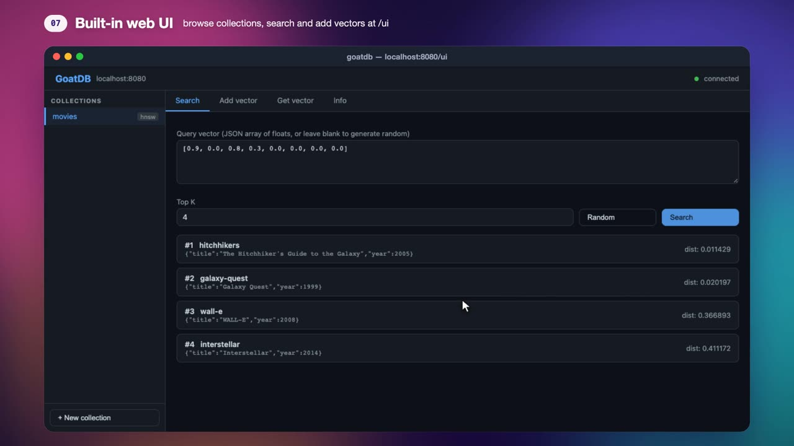

goatdb
A vector database you run as a server or import as a Go library.
Store embeddings with metadata and find the closest ones in under a millisecond. One binary gives you a REST API, a web UI and durable storage. Built from scratch in Go.
By Fayez Zouari
go install github.com/fayezzouari/goatdb/cmd/goatdb@latestEach movie is a vector of genre scores. goatdb ranks them by distance to your query and returns the top 3 with their metadata. Real embeddings have hundreds of dimensions; the search works the same way.
See it run in two and a half minutes
Installing, creating a collection, inserting, searching, the web UI, surviving a restart, and using goatdb as a library. Also on YouTube.

Everything a vector store needs, nothing it doesn't
Four index types
Pick the trade-off per collection. Tune HNSW and IVF parameters at creation time and search depth per query.
| HNSW | Graph index. Best recall for the speed, the default choice. |
| IVF | Clusters vectors with k-means and searches the closest lists. |
| LSH | Random hyperplane hashing. Cheap to build. |
| Flat | Exact brute-force search, for small sets and ground truth. |
Fast distance math
Hand-written AVX2 kernels on x86 and NEON on ARM, including Apple Silicon and Graviton. Cosine vectors are normalised once at insert, so each comparison is a single dot product.
Three ways in
A JSON REST API, a built-in web UI at /ui, and the same engine as a Go package with no server at all.
Durable writes
Every insert follows the same path. A crash at any point is recovered on the next start.
Measured on SIFT-1M
One million 128-dimension vectors from the standard ann-benchmarks set, HNSW with M=16 and efConstruction=200, 1,000 queries over HTTP.
at 0.71 ms median latency, ef=128
to insert and index 1M vectors, 5× faster than the single-threaded build
peak memory for the 1M index, down from 4.4 GB
Apple M4 Pro, goatdb limited to 8 cores, Python client over HTTP/JSON with keep-alive; latency includes the HTTP round trip. Reproduce it with bench/compare in the repository, which also runs Qdrant, Weaviate, Milvus, pgvector and Chroma under the same limits.
Get started
$ docker run -d -p 8080:8080 -v goatdb:/data ghcr.io/fayezzouari/goatdb $ curl -X POST localhost:8080/collections \ -d '{"name": "docs", "dim": 768, "metric": "cosine", "index_type": "hnsw"}' # web UI: http://localhost:8080/ui
$ go install github.com/fayezzouari/goatdb/cmd/goatdb@latest $ goatdb -addr :8080 -dir ./data # or download a prebuilt binary for Linux or macOS from GitHub Releases
import ( "github.com/fayezzouari/goatdb/core" "github.com/fayezzouari/goatdb/db" ) store, _ := db.Open("./vectors") defer store.Close() docs, _ := store.CreateCollection("docs", 768, core.Cosine, "hnsw") docs.AddVector(ctx, "doc-1", core.Vector{Embeddings: emb, Metadata: meta}) results, _ := docs.Search(ctx, core.Vector{Embeddings: query}, 10)